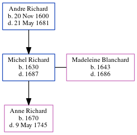

Michel Richard 1630 - 1687
[ Home ] | [ Calendar ] | [ Surnames Index ] | [ Census Index ] | [ Family History ]The child of Andre Richard, Michel Richard, the 9 times great-grandfather of Michele Copp (née Phillips), was born in Saintonge, , , France in 16301 and married Madeleine Blanchard (with whom he had 1 child, Anne) in Port Royal, Acadia, Nova Scotia, Canada in 16561, which is also where he died in 1687.
Parents
- Andre was born on Nov 20, 1600
Children
- Anne was born in 1670
Citations
- U.S. and International Marriage Records, 1560-1900 Online publication - Provo, UT, USA: The Generations Network, Inc., 2004.Original data - This unique collection of records was extracted from a variety of sources including family group sheets and electronic databases. Originally, the information was deriv
Family Tree
Generated by ged2site. Last updated on Jun 6, 2024